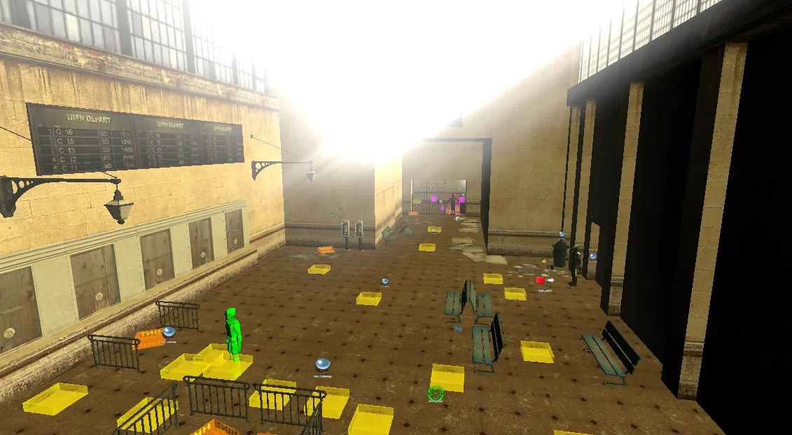
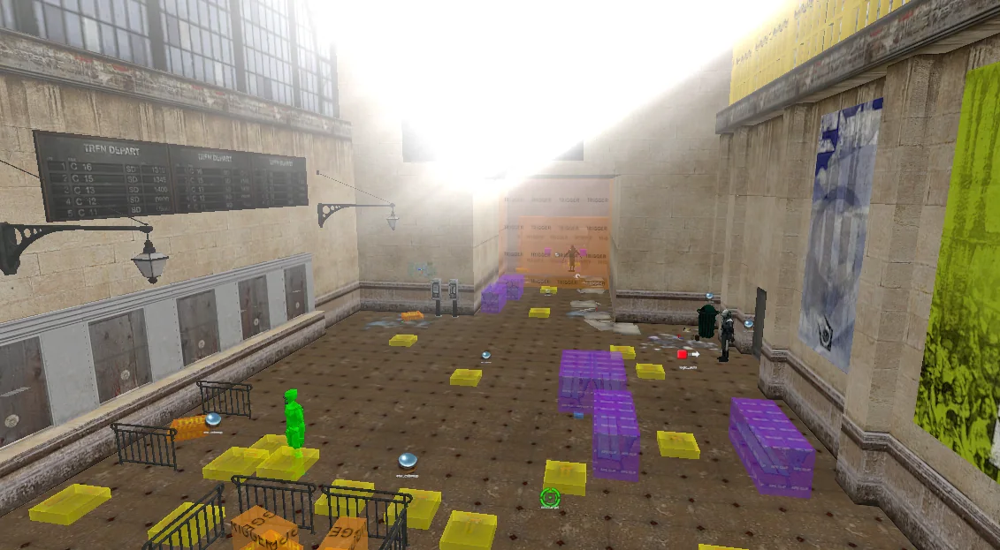

Mallet
A Hammer-style level editor for Source engine maps
Hammer's four viewports and Hammer++'s tools and keys, in a fast editor written in Rust. Mallet opens and saves VMF files without losing anything, lights your map the way VRAD will, compiles it, and lets AI agents help.
d1_trainstation_02 in Mallet's four viewports.Features
Everything you reach for in Hammer, where you expect it
The window follows Hammer++: menus over an icon toolbar, map tabs, the tool palette on the left, four viewports and the object panel on the right. Keys follow Hammer++'s defaults, so your hands already know it.
-
Lossless VMF
Open a VMF and save it again without losing anything, so every Source tool still reads what Mallet writes.
-
Selection, Block and Entity tools
Scale, rotate and skew handles in the 2D views, and a Hammer++-style move, rotate and scale gizmo in 3D. Primitives include wedges, cylinders, spikes, spheres and arches.
-
Clipping and vertex editing
Two- and three-point clipping, vertex and edge dragging with grid snapping, face splitting, Carve and Make Hollow.
-
Textures from every mounted game
A texture browser that loads every mounted game's materials, and Hammer++'s Face Edit Sheet with Lift, Apply, Justify and texture lock.
-
Models, textured in 3D
Props show their real models, skins and scales. The model browser has thumbnails, a sidebar of games and addons, and a preview you can turn.
-
Overlays and decals as the game draws them
Posters, stains and graffiti lie on the faces they cover, cut to their shape, and ride along with texture lock.
-
Object Properties from your FGD
Keyvalues, flags and outputs driven by the game's FGD, with face pickers and Paste Special for copies, spirals and numbered names.
-
Compile without leaving
Hammer's Run Map dialog, plus a CompilePal-style window with presets for VBSP, VVIS, VRAD, cubemaps and BSPZip. Leaks show as a line through the map.
-
Tabs that keep their place
Every map tab has its own views, camera, selection and undo history. Copy between maps with fresh ids and kept names.
3D Lighting Preview
See the light before you compile
Switch the camera to 3D Lighting Preview and Mallet lights the map with every Source light entity, following VRAD's own rules: colours and brightness, falloff, spotlight cones, sunlight through sky faces, sky light and shadows.
Drag across the picture to compare the textured view with the lit one.


The .mallet format
Big maps open fast
Save as VMF for every Source tool, or as .mallet, Mallet's own binary format. It holds
exactly the same map, but stores planes and texture axes as numbers and every repeated
string once. Compiling a .mallet map writes a VMF copy for the compilers first.
- On disk
- 2.8 MB for a 28.5 MB VMF
- Opening
- 3× faster than the VMF
- Saving
- 4× faster than the VMF
AI agents
An editor that agents can use too
While Mallet runs, its built-in MCP server lets AI agents inspect and edit the map, compile it and take screenshots. The screenshots on this page were taken that way.
Agents work in their own view: their own tab, camera, grid and selection. Their edits show in your viewports straight away, while your camera stays where you left it.
{
"mcpServers": {
"mallet": {
"type": "http",
"url": "http://127.0.0.1:7414/mcp"
}
}
}Download
Get Mallet
Each release has a Windows program and a Linux build.
From source
With a recent Rust toolchain:
git clone https://github.com/riggs9162/mallet
cd mallet
cargo run --release -p malletFirst start
- Mallet looks for Garry's Mod, Half-Life 2, the Source SDK Base 2013 games or Counter-Strike: Source in your Steam libraries. Pick another with Tools › Game Folder..., the folder that holds
gameinfo.txt. - Open a map with File › Open, or drop a
.vmfor.malletfile onto the window. - Press F9 to compile with the game's own tools. On Linux, install the Tools++ compilers (
vbsp++,vvis++,vrad++) and Mallet finds them on yourPATH.
Roadmap
Where Mallet is going
Mallet is a work in progress, working towards everything Hammer and Hammer++ do. Displacements are next. Progress below is read live from the roadmap.
- Loading the roadmap...